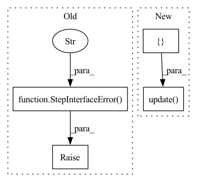

Pattern ID :18871
Before Change
elif isinstance(arg_type, Param):
cls.PARAM_SPEC.update({arg: arg_type.type})
else:
raise StepInterfaceError(
f"Unsupported or unknown annotation {arg_type} detected "
f"in the input signature . When designing your step "
f"please use either Input[AnyArtifactType], "
f"Output[AnyArtifactType] or Param[AnyPrimitiveType] for "
f"your annotations."
)
// Infer the defaults
process_defaults = process_spec.defaults
if process_defaults is not None:After Change
elif isinstance(arg_type, Param):
cls.PARAM_SPEC.update({arg: arg_type.type})
else:
cls.PARAM_SPEC.update( { arg: arg_type})
// Infer the defaults
process_defaults = process_spec.defaults
if process_defaults is not None:In pattern: SUPERPATTERN
Frequency: 3
Non-data size: 4
Instances Fragment ID: 61351274
Project Name: maiot-io/zenml
Commit Name: 2f27ed824d749c5d5583ec0e8b68850835579512
Time: 2021-09-30
Author: htahir111@gmail.com
File Name: src/zenml/steps/base_step.py
M Class Name: BaseStepMeta
N Class Name: BaseStepMeta
M Method Name: __new__(4)
N Method Name: __new__(4)
M Parent Class: type
N Parent Class: type
M File Name: src/zenml/steps/base_step.py
N File Name: src/zenml/steps/base_step.py
M Start Line: 41
M End Line: 47
N Start Line: 17
N End Line: 43
Before Change
process_defaults = process_spec.defaults
if process_defaults is not None:
raise StepInterfaceError(
"The usage of default values for "
"parameters is not fully implemented yet."
"Please do not use default values in "
"your step definition."
)
// for i, default in enumerate(process_defaults):
// // TODO: [HIGH] fix the implementation
// process_args.reverse()
// arg = process_args[i]After Change
cls.OUTPUT_SPEC.update({return_tuple[0]: BaseArtifact})
elif default_materializer_factory.is_registered(return_spec):
// If its one output, then give it a single return name.
cls.OUTPUT_SPEC.update( { SINGLE_RETURN_OUT_NAME: BaseArtifact})
else:
raise StepInterfaceError(
f"In a ZenML step, you can only return an arg type with "
f"a default materializer. You passed in {return_spec}, " Fragment ID: 61351275
Project Name: maiot-io/zenml
Commit Name: eb872d5d15cb8d445ad34503f4d1cfd7696f0dc3
Time: 2021-10-12
Author: htahir111@gmail.com
File Name: src/zenml/steps/base_step.py
M Class Name: BaseStepMeta
N Class Name: BaseStepMeta
M Method Name: __new__(4)
N Method Name: __new__(4)
M Parent Class: type
N Parent Class: type
M File Name: src/zenml/steps/base_step.py
N File Name: src/zenml/steps/base_step.py
M Start Line: 33
M End Line: 93
N Start Line: 34
N End Line: 88
Before Change
arg = process_args[i]
arg_type = process_spec.annotations.get(arg, None)
if not isinstance(arg_type, Param):
raise StepInterfaceError(
f"A default value in the signature of a step can only "
f"be used for a Param[...] not {arg_type}."
)
return cls
After Change
if issubclass(arg_type, BaseArtifact):
cls.INPUT_SPEC.update({arg: arg_type.type})
else:
cls.INPUT_SPEC.update( { arg: JSONArtifact})
elif isinstance(arg_type, Output):
cls.OUTPUT_SPEC.update({arg: arg_type.type})
else:
cls.PARAM_SPEC.update({arg: arg_type}) Fragment ID: 61351276
Project Name: maiot-io/zenml
Commit Name: cfaf64a733041271d1b3710307c0ea561f190f70
Time: 2021-09-30
Author: bariscandurak@hotmail.com
File Name: src/zenml/steps/base_step.py
M Class Name: BaseStepMeta
N Class Name: BaseStepMeta
M Method Name: __new__(4)
N Method Name: __new__(4)
M Parent Class: type
N Parent Class: type
M File Name: src/zenml/steps/base_step.py
N File Name: src/zenml/steps/base_step.py
M Start Line: 17
M End Line: 59
N Start Line: 19
N End Line: 61